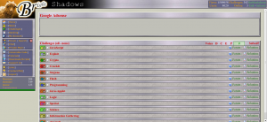
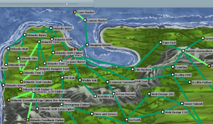

Challenge websites are websites which offer many tasks to solve and a ranking system. If you solve the challenges, you get points and your rank increases. You don't get anything else. No money, no price. Only the knowledge and the ranking. Which is enough in my opinion. It might sound strange to others, but its fun to try to find the error in an application or to try to get better than others.
The topics could be anything, but most of the time you should exploit a security whole.
All Challenge websites I know use categories to organize their challenges. I'll describe some of them later.
Why should challenge websites be more famous?
Some people think its exciting to get to know the internals of a system. Questions like "What will happen if I take the absolute value of -2,147,483,648?" come automatically to their mind. If you are not one of those guys, you might ask yourself "Why -2147483648? Why not -1234?". Well, the simple answer is that in almost every programming language integers have 32 bytes. This means, you can store 2^32 values in this variable. As you have negative numbers, only 2^31 for each side. As you have 0, for one side one less. The range of an integer is in most languages -2^31 to +(2^31 -1). So if you take the absolute value of -2^31, you're out of that range. It is much more interesting to get to know what could possibly go wrong in other systems and to show others your punditry than setting up an isolated system and trying to get unexpected results. If you don't know about challenge websites it is quite likely that you will try your knowledge on productive systems. This might result in a real damage.
Another reason why challenge websites should get more famous is the moral compass. Even very young children can get an awfully amount of knowledge in computers. They might be able to hack others, but they don't have a feeling for whats wrong and right. If they try their knowledge in on a challenge website, they get a community they can talk to. I guess the administrators will not be happy if they exploit their systems, but if they tell them how to fix it I guess they would not go to the police. (As it is very likely that the attacker didn't really cause any damage like the loss of personal information or shutting down a system for which customers paid for, I think it is very unlikely that they will got to police.). I think it's very likely that they will give the credits for the patch / bug on their site. hacker.org does so, for example.
I could also imagine that software companies could be interested in such websites. Wouldn't it be a great idea to post programming challenges and to contact the people who rank high?
What are common categories?
JavaScript
JavaScript password protections are not secure. They are very easy to exploit and the website owner can be sure, that he will not open a real security leak when he creates such a challenge.
Some common tasks include:
- Looking into the source code of the webpage
- Deactivating JavaScript because you are redirected
- Understanding JavaScript
Exploit
Many websites have server side bugs or vulnerabilities. So you can create challenges for "hackers" to find and exploit those to get to a hidden page. These exploits could be:
- SQL injections
- XSS
- Missing password protection
- Code injection
- Possible rights escalation
Cryptography
Cryptography is the practice and study of techniques for secure communication in the presence of third parties. This means you know that others will read your messages, but this doesn't mean they have to get to know what it means. They will only see rubbish and hopefully they don't know how to translate it into a meaningful sentence.
As cryptography is older than computers you can find very many cryptographical challenges. One of the most common ones is the Caesar cipher.
Most ciphers are in at least one of the following categories:
- Classical Ciphers
- Substitution Ciphers
- Transposition Ciphers
- Block Ciphers
- Symmetrical Ciphers
- Asymmetrical Ciphers
Steganography
Steganography is the art of hiding data. In the case of cryptography, your opponent knows that he has the information. In case of steganography he might think that he has only a nice picture. Did you ever use invisible ink as a child? Congratulations, you have already applied steganography!
Some common steganographic challenges are:
- Looking at the source code of a webpage
- Looking very exactly at a high resolution image
- Examining a .gif with multiple layers / a video
- Playing a sound really slow / fast
- Playing with the bits of an image
CrackIts
CrackIts are challenges where you have to change a binary to get the results. Cracks are quite common. Perhaps you know that some illegal versions a very expensive software which can be found online don't need the registration code. They were cracked.
Flash / Java Applets
It is basically always decompiling and understanding the crappy output. As a reallife-application you could imagine an online game where you want to get into the highscore. Decompile it, look at the place where it gets submitted and submit your wished high score.
Programming
Programming challenges have a time component. You need to solve a specific instance of a problem in, well, lets say three seconds. Enough time for a computer to connect to the webpage, download the problem, solve it and upload the solution. Most of the time by far not enough to solve it by hand.
Logic, Math and Science
A classical logic challenge is the riddle of the Sphinx. Another one is Einstein's riddle.
I guess you can imagine what a math challenge is? 1 + 1 = x, solve to x would be one. The Impossible Puzzle would be another one.
The science challenges are like the homework I had to do in school. Some are very difficult, others are quite easy. But the kind of questions which were very similar to the questions in school.
Information Gathering
Almost every challenge could also be in the "Information Gathering" category. Who doesn't try Google first? (Except if the answer is obvious, of course.)
Basic tasks are to get to know something about the owner of a specific website or about the content of a website a few years ago.
Some examples
{kind=link}

{kind=link}

{kind=link}
ProjectEuler - for people who are interested in math challenges: